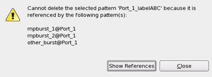
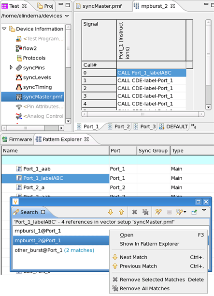

Checking pattern references
Checking for pattern references helps to streamline your pattern setups and to maintain valid pattern master file structures.
About this task
You cannot delete a pattern on Pattern Explorer which is referenced by other patterns. A subroutine may be referenced by a main pattern, and a main pattern may be referenced by a burst. Trying to delete a referenced pattern triggers an error message. For example:

To check these references click Show References in the error message. The Search view opens and lists the references. See also below.
Patterns not triggering an error message
Before deleting any patterns that are not loaded but only initialized, for example, by initializing a pattern master file) you should check for references in order to avoid a broken pattern master file. The Pattern Explorer lists the initialized but not loaded patterns as grayed-out items.
Procedure
In the Pattern Explorer, right-click the pattern to check and select References.The Search view opens. It lists all bursts, port bursts, or multiport bursts which reference the selected main pattern. Multiple matches per referenced item are indicated with (x matches).
- To open any of the found references in the editor double-click it or press F3.
- To step from one found reference to the next, right-click and select either Next Match or Previous Match.
- To clear the Search view click Remove Selected/All Matches.
Example

Functional changes
- Introduced in SmarTest 7.1.3